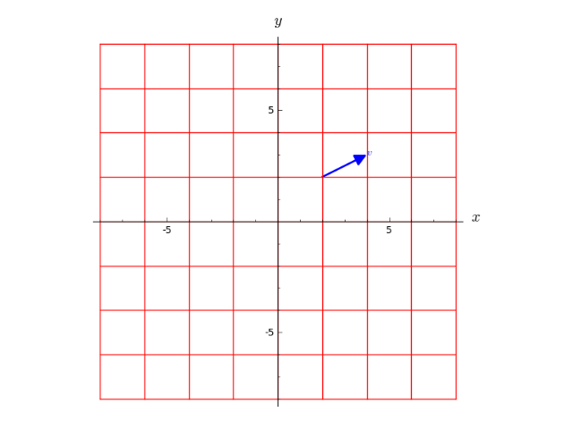
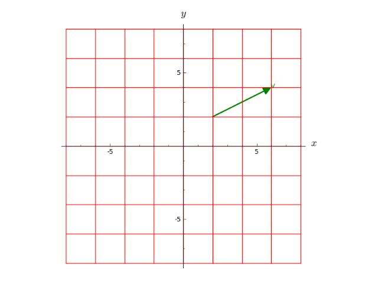
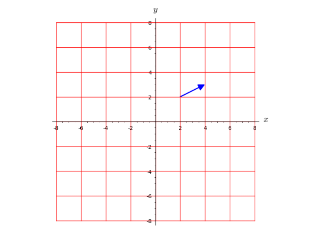
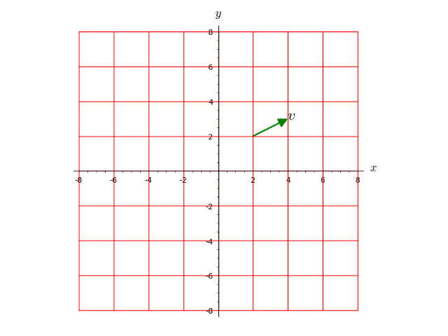
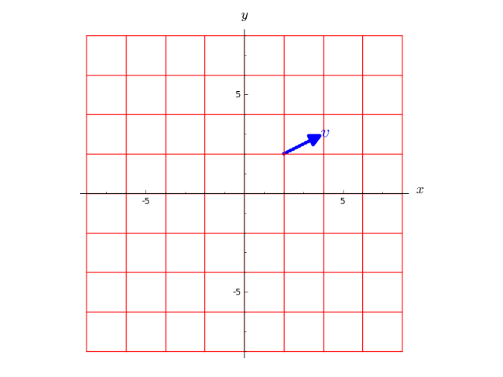
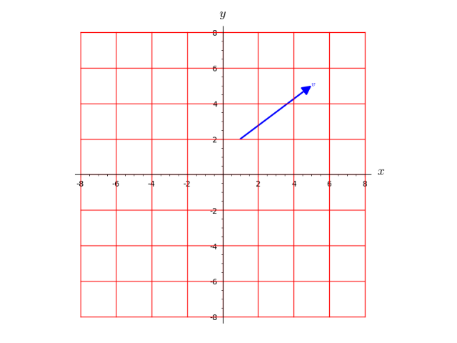
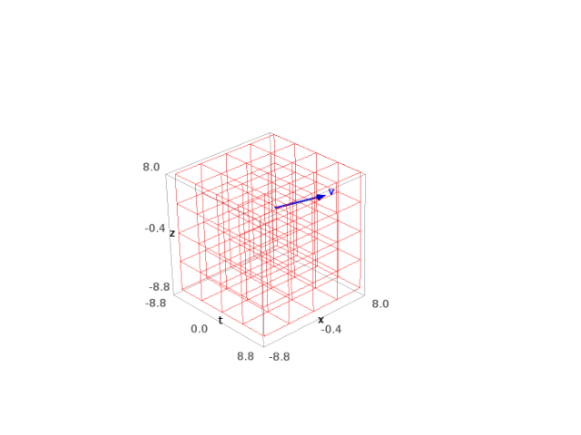
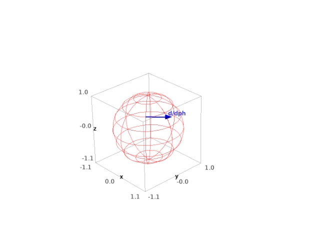

Tangent Vectors¶
The class TangentVector implements tangent vectors to a differentiable
manifold.
AUTHORS:
- Eric Gourgoulhon, Michal Bejger (2014-2015): initial version
- Travis Scrimshaw (2016): review tweaks
REFERENCES:
- Chap. 3 of [Lee2013]
-
class
sage.manifolds.differentiable.tangent_vector.TangentVector(parent, name=None, latex_name=None)¶ Bases:
sage.tensor.modules.free_module_element.FiniteRankFreeModuleElementTangent vector to a differentiable manifold at a given point.
INPUT:
parent–TangentSpace; the tangent space to which the vector belongsname– (default:None) string; symbol given to the vectorlatex_name– (default:None) string; LaTeX symbol to denote the vector; ifNone,namewill be used
EXAMPLES:
Tangent vector on a 2-dimensional manifold:
sage: M = Manifold(2, 'M') sage: c_xy.<x,y> = M.chart() sage: p = M.point((2,3), name='p') sage: Tp = M.tangent_space(p) sage: v = Tp((-2,1), name='v') ; v Tangent vector v at Point p on the 2-dimensional differentiable manifold M sage: v.display() v = -2 d/dx + d/dy sage: v.parent() Tangent space at Point p on the 2-dimensional differentiable manifold M sage: v in Tp True
See also
FiniteRankFreeModuleElementfor more documentation.-
plot(chart=None, ambient_coords=None, mapping=None, color='blue', print_label=True, label=None, label_color=None, fontsize=10, label_offset=0.1, parameters=None, scale=1, **extra_options)¶ Plot the vector in a Cartesian graph based on the coordinates of some ambient chart.
The vector is drawn in terms of two (2D graphics) or three (3D graphics) coordinates of a given chart, called hereafter the ambient chart. The vector’s base point \(p\) (or its image \(\Phi(p)\) by some differentiable mapping \(\Phi\)) must lie in the ambient chart’s domain. If \(\Phi\) is different from the identity mapping, the vector actually depicted is \(\mathrm{d}\Phi_p(v)\), where \(v\) is the current vector (
self) (see the example of a vector tangent to the 2-sphere below, where \(\Phi: S^2 \to \RR^3\)).INPUT:
chart– (default:None) the ambient chart (see above); ifNone, it is set to the default chart of the open set containing the point at which the vector (or the vector image via the differential \(\mathrm{d}\Phi_p\) ofmapping) is definedambient_coords– (default:None) tuple containing the 2 or 3 coordinates of the ambient chart in terms of which the plot is performed; ifNone, all the coordinates of the ambient chart are consideredmapping– (default:None)DiffMap; differentiable mapping \(\Phi\) providing the link between the point \(p\) at which the vector is defined and the ambient chartchart: the domain ofchartmust contain \(\Phi(p)\); ifNone, the identity mapping is assumedscale– (default: 1) value by which the length of the arrow representing the vector is multipliedcolor– (default: ‘blue’) color of the arrow representing the vectorprint_label– (boolean; default:True) determines whether a label is printed next to the arrow representing the vectorlabel– (string; default:None) label printed next to the arrow representing the vector; ifNone, the vector’s symbol is used, if anylabel_color– (default:None) color to print the label; ifNone, the value ofcoloris usedfontsize– (default: 10) size of the font used to print the labellabel_offset– (default: 0.1) determines the separation between the vector arrow and the labelparameters– (default:None) dictionary giving the numerical values of the parameters that may appear in the coordinate expression ofself(see example below)**extra_options– extra options for the arrow plot, likelinestyle,widthorarrowsize(seearrow2d()andarrow3d()for details)
OUTPUT:
- a graphic object, either an instance of
Graphicsfor a 2D plot (i.e. based on 2 coordinates ofchart) or an instance ofGraphics3dfor a 3D plot (i.e. based on 3 coordinates ofchart)
EXAMPLES:
Vector tangent to a 2-dimensional manifold:
sage: M = Manifold(2, 'M') sage: X.<x,y> = M.chart() sage: p = M((2,2), name='p') sage: Tp = M.tangent_space(p) sage: v = Tp((2, 1), name='v') ; v Tangent vector v at Point p on the 2-dimensional differentiable manifold M
Plot of the vector alone (arrow + label):
sage: v.plot() Graphics object consisting of 2 graphics primitives
Plot atop of the chart grid:
sage: X.plot() + v.plot() Graphics object consisting of 20 graphics primitives
Plots with various options:
sage: X.plot() + v.plot(color='green', scale=2, label='V') Graphics object consisting of 20 graphics primitives
sage: X.plot() + v.plot(print_label=False) Graphics object consisting of 19 graphics primitives
sage: X.plot() + v.plot(color='green', label_color='black', ....: fontsize=20, label_offset=0.2) Graphics object consisting of 20 graphics primitives
sage: X.plot() + v.plot(linestyle=':', width=4, arrowsize=8, ....: fontsize=20) Graphics object consisting of 20 graphics primitives
Plot with specific values of some free parameters:
sage: var('a b') (a, b) sage: v = Tp((1+a, -b^2), name='v') ; v.display() v = (a + 1) d/dx - b^2 d/dy sage: X.plot() + v.plot(parameters={a: -2, b: 3}) Graphics object consisting of 20 graphics primitives
Special case of the zero vector:
sage: v = Tp.zero() ; v Tangent vector zero at Point p on the 2-dimensional differentiable manifold M sage: X.plot() + v.plot() Graphics object consisting of 19 graphics primitives
Vector tangent to a 4-dimensional manifold:
sage: M = Manifold(4, 'M') sage: X.<t,x,y,z> = M.chart() sage: p = M((0,1,2,3), name='p') sage: Tp = M.tangent_space(p) sage: v = Tp((5,4,3,2), name='v') ; v Tangent vector v at Point p on the 4-dimensional differentiable manifold M
We cannot make a 4D plot directly:
sage: v.plot() Traceback (most recent call last): ... ValueError: the number of coordinates involved in the plot must be either 2 or 3, not 4
Rather, we have to select some chart coordinates for the plot, via the argument
ambient_coords. For instance, for a 2-dimensional plot in terms of the coordinates \((x, y)\):sage: v.plot(ambient_coords=(x,y)) Graphics object consisting of 2 graphics primitives
This plot involves only the components \(v^x\) and \(v^y\) of \(v\). Similarly, for a 3-dimensional plot in terms of the coordinates \((t, x, y)\):
sage: g = v.plot(ambient_coords=(t,x,z)) sage: print(g) Graphics3d Object
This plot involves only the components \(v^t\), \(v^x\) and \(v^z\) of \(v\). A nice 3D view atop the coordinate grid is obtained via:
sage: (X.plot(ambient_coords=(t,x,z)) # long time ....: + v.plot(ambient_coords=(t,x,z), ....: label_offset=0.5, width=6)) Graphics3d Object
An example of plot via a differential mapping: plot of a vector tangent to a 2-sphere viewed in \(\RR^3\):
sage: S2 = Manifold(2, 'S^2') sage: U = S2.open_subset('U') # the open set covered by spherical coord. sage: XS.<th,ph> = U.chart(r'th:(0,pi):\theta ph:(0,2*pi):\phi') sage: R3 = Manifold(3, 'R^3') sage: X3.<x,y,z> = R3.chart() sage: F = S2.diff_map(R3, {(XS, X3): [sin(th)*cos(ph), ....: sin(th)*sin(ph), ....: cos(th)]}, name='F') sage: F.display() # the standard embedding of S^2 into R^3 F: S^2 --> R^3 on U: (th, ph) |--> (x, y, z) = (cos(ph)*sin(th), sin(ph)*sin(th), cos(th)) sage: p = U.point((pi/4, 7*pi/4), name='p') sage: v = XS.frame()[1].at(p) ; v # the coordinate vector d/dphi at p Tangent vector d/dph at Point p on the 2-dimensional differentiable manifold S^2 sage: graph_v = v.plot(mapping=F) sage: graph_S2 = XS.plot(chart=X3, mapping=F, number_values=9) # long time sage: graph_v + graph_S2 # long time Graphics3d Object
